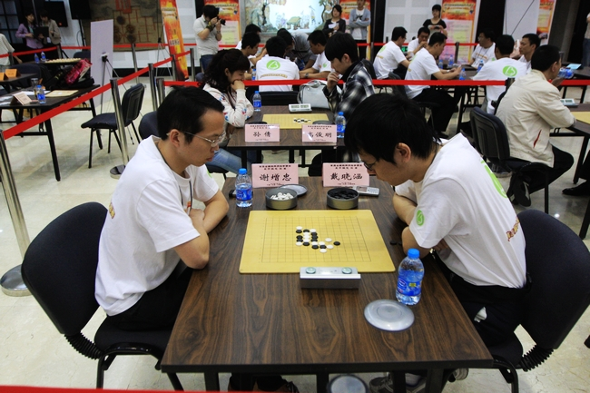

［ 五子痴 于 2011-10-18 9:10:36 时花20金币送鲜花一朵］
 顶，多点举办比赛把
顶，多点举办比赛把整点抽奖：大赛期间，每周一至周四每日3个整点(20点，21点，22点)在线用户抽奖，每个整点抽取100名幸运用户，各奖励10元移动手机话费。中奖名单请将于次月20日前公布，相关抽过过程将由公证处全程公证。
好友推荐奖：大赛期间，每月全国推广好友数排名前100名的用户获赠100元移动手机话费。
小时赛：大赛期间，每周五至周六20:00-22:00设置小时赛，进入小时赛房间，按积分排名评比全国小时冠军。冠军获得500元移动话费。
全国总冠军：冠军指环、欧洲双人游、证书。
全国亚军：澳洲单人游、证书。
全国季军：巴厘岛单人游、证书。
【常规赛事】
省级赛(7月-8月)：按用户比赛积分排名赛出各项目每省前10强获得晋级资格及50元移动话费;
全国赛(9月-10月)：省级赛晋级选手角逐全国10强，10强选手赛出全国总冠、亚、季军。
常规奖项的设置真的很业余，省级晋级就奖励个话费，甚至连全国决赛是否报销路费的问题都不说明。
冠名全国XX比赛，竟然比赛具体细节比如破同分等实际问题可以用看胜率、看注册时间的办法来排。
从字面上看这次比赛的规则，给我的感觉就是主办方只重比赛的娱乐性，和自身宣传的噱头，对比赛公平公开公正性几乎无所顾忌，
据以往参加网络比赛的经验，这样的比赛很容易被暗箱操作，
貌似以前CEG的比赛也有被TX暗箱过的先例。可悲啊～～～
怀念N年前的“陕西电信杯”！
大家要不要人肉搜索一下这两位参赛选手啊？


－ －！小天参赛了・・・赛程安排很满啊・・・估计冠军归他了。。。
不知道拿了冠军去旅游能赶得及智运会开始不，嘿嘿
http://titanimg.titan24.com/qipai/news/2011/05/09/56fe8df8611304922565.jpg原图地址
［此帖子已被 悟石 在 2011-10-16 11:18:17 编辑过］
［此帖子已被 有志青年 在 2011-10-16 12:53:24 编辑过］
全国亚军：澳洲单人游、证书。
全国季军：巴厘岛单人游、证书。
真爽。。。
引用：人你个头，孙倩是中游冰冰，高俊明是幽灵
原文由 悟石 发表于 2011-10-16 10:45:12 :
大家要不要人肉搜索一下这两位参赛选手啊？
啊－ －！
原来都是咱中游的，一个是妹妹一个是小弟哇。